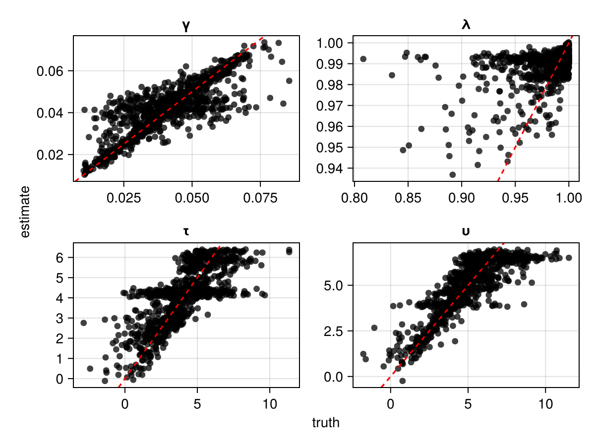
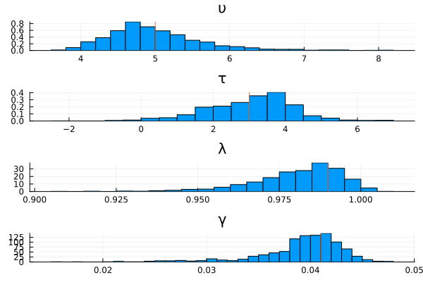
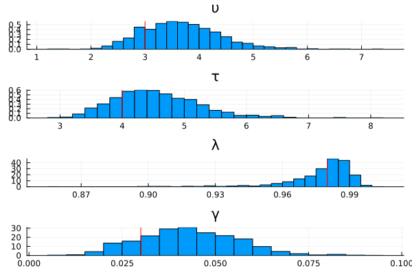

Docs are a work in progress.
Introduction
This page demonstrates how to perform amortized Bayesian inference using neural networks. Click below to reveal a full copy-and-pastable version of the code.
Show Full Code
using ACTRPVT
using AlgebraOfGraphics
using CairoMakie
using Distributions
using Flux
using NeuralEstimators
using Plots
n = 1 # dimension of each data replicate
m = 50 # number of independent replicates
d = 4 # dimension of the parameter vector θ
w = 128 # width of each hidden layer
function sample(K)
υτ = rand(MvNormal([5, 4], [4 2; 2 4]), K)
λ = rand(Beta(25, .5), K)
γ = rand(truncated(Normal(.04, .015),.01, Inf), K)
θ = vcat(υτ, λ' , γ')
return θ
end
to_matrix(x) = reshape(x, 1, length(x))
simulate(θ, m) = [to_matrix(rand(PVTModel(ϑ...), m)) for ϑ ∈ eachcol(θ)]
# Approximate distribution
approx_dist = NormalisingFlow(d, 2d)
# Neural network mapping data to summary statistics (of the same dimension used in the approximate distribution)
ψ = Chain(x -> sign.(x) .* log.(1 .+ abs.(x)), Dense(n, w, relu), Dense(w, w, relu)) # NB now using log-transform for numerical stability
ϕ = Chain(Dense(w, w, relu), Dense(w, 2d))
network = DeepSet(ψ, ϕ)
# Initialise a neural posterior estimator
estimator = PosteriorEstimator(approx_dist, network)
# Train the estimator
trained_estimator = train(
estimator,
sample,
simulate;
m,
epochs = 30,
K = 15_000
)
# Assess the estimator
θ_test = sample(1000)
Z_test = simulate(θ_test, m)
assessment = assess(trained_estimator, θ_test, Z_test; parameter_names = ["υ", "τ", "λ", "γ"])
bias(assessment)
rmse(assessment)
AlgebraOfGraphics.plot(assessment)
# Apply the estimator to observed data
title = ["υ" "τ" "λ" "γ"]
θ = [5,3,.97,.05] # true parameters
Z = simulate(θ, m) # "observed" data
post_samples = sampleposterior(trained_estimator, Z)
Plots.histogram(post_samples'; layout = (4,1), norm = true, leg = false, title)
vline!([θ'], color = :red)
# Apply the estimator to observed data
θ = [3,4,.98,.03] # true parameters
Z = simulate(θ, m) # "observed" data
post_samples = sampleposterior(trained_estimator, Z)
Plots.histogram(post_samples'; layout = (4,1), norm = true, leg = false, title)
vline!([θ'], color = :red)Load the Dependencies
using ACTRPVT
using AlgebraOfGraphics
using CairoMakie
using Distributions
using Flux
using NeuralEstimators
using Plotsn = 1 # dimension of each data replicate
m = 50 # number of independent replicates
d = 4 # dimension of the parameter vector θ
w = 128 # width of each hidden layer function sample(K)
υτ = rand(MvNormal([5, 4], [4 2; 2 4]), K)
λ = rand(Beta(25, .5), K)
γ = rand(truncated(Normal(.04, .015),.01, Inf), K)
θ = vcat(υτ, λ' , γ')
return θ
endto_matrix(x) = reshape(x, 1, length(x))
simulate(θ, m) = [to_matrix(rand(PVTModel(ϑ...), m)) for ϑ ∈ eachcol(θ)] Configure the Neural Network
approx_dist = NormalisingFlow(d, 2d)
ψ = Chain(x -> sign.(x) .* log.(1 .+ abs.(x)), Dense(n, w, relu), Dense(w, w, relu))
ϕ = Chain(Dense(w, w, relu), Dense(w, 2d))
network = DeepSet(ψ, ϕ)create the estimator
estimator = PosteriorEstimator(approx_dist, network) Train the estimator
trained_estimator = train(
estimator,
sample,
simulate;
m,
epochs = 30,
K = 15_000
)Assess the estimator
θ_test = sample(1000)
Z_test = simulate(θ_test, m)
assessment = assess(trained_estimator, θ_test, Z_test; parameter_names = ["υ", "τ", "λ", "γ"])
bias(assessment)
rmse(assessment)
AlgebraOfGraphics.plot(assessment)
Estimate the Posterior Distributions
The examples below estimate the posterior distributions using data generated from two different sets of parameters. The vertical red lines in each sub-plot indicate the ground truth parameter values.
title = ["υ" "τ" "λ" "γ"]
θ = [5,3,.97,.05] # true parameters
Z = simulate(θ, m) # "observed" data
post_samples = sampleposterior(trained_estimator, Z)
Plots.histogram(post_samples'; layout = (4,1), norm = true, leg = false, title)
vline!([θ'], color = :red)
θ = [3,4,.98,.03] # true parameters
Z = simulate(θ, m) # "observed" data
post_samples = sampleposterior(trained_estimator, Z)
Plots.histogram(post_samples'; layout = (4,1), norm = true, leg = false, title)
vline!([θ'], color = :red)
